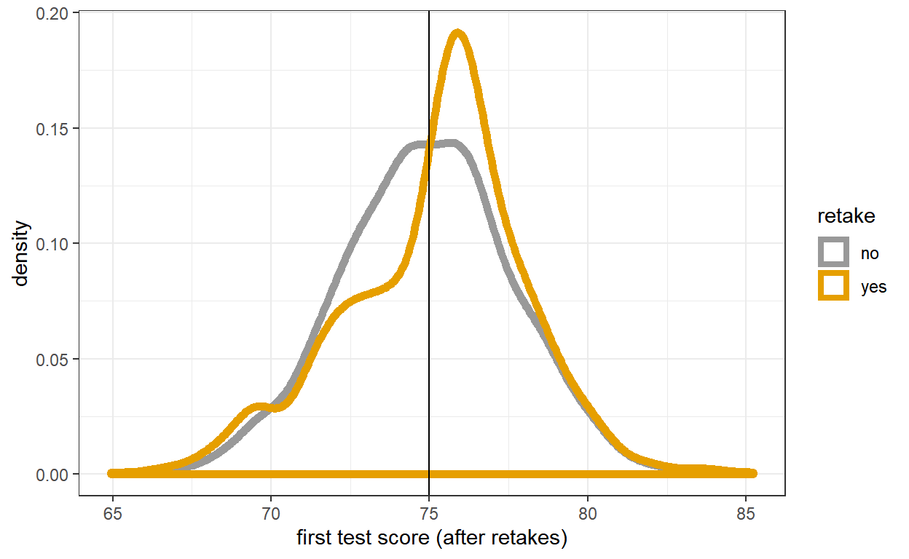
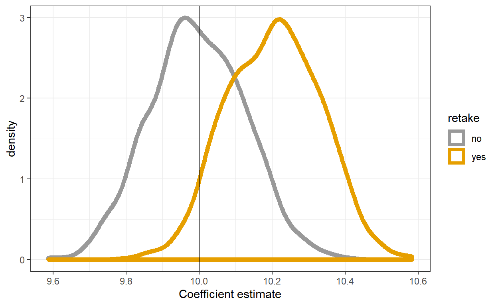
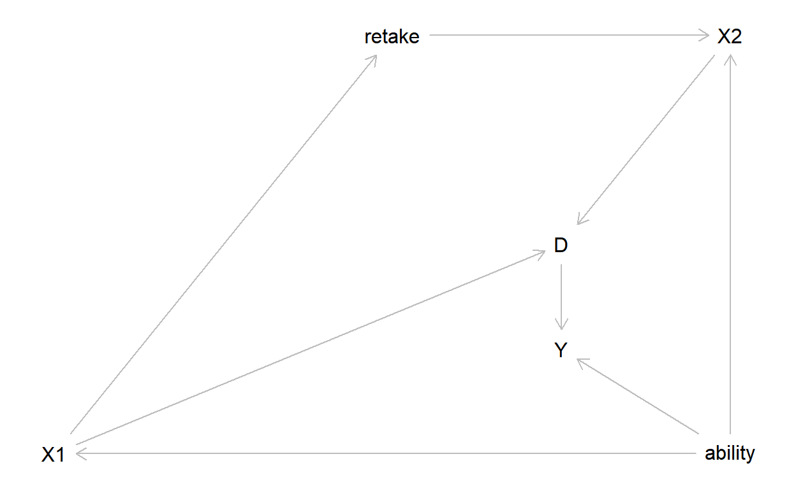
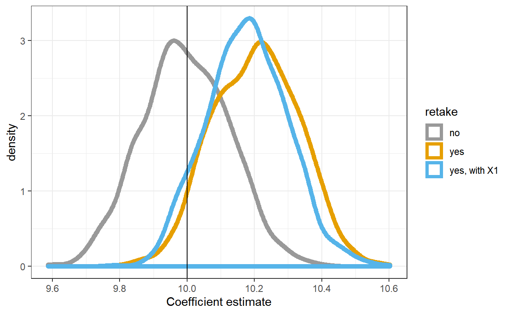
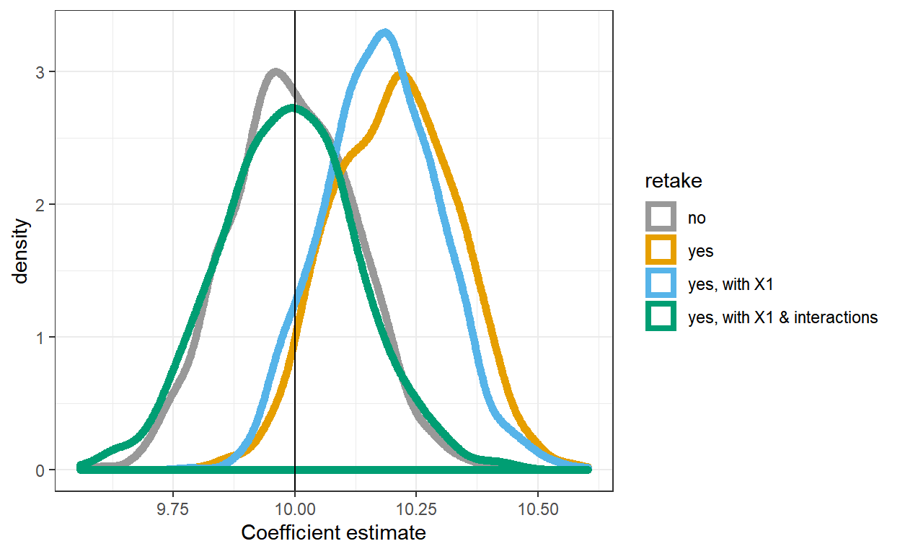

When people get to choose their assignment variable
For the last couple of years, I have given my econometrics class (ECON 5820) a simulation exercise problem set for regression discontinuity. (see Exercise 10.5 of my econometrics notes for the whole thing). This was the first year for me teaching Directed Acyclic Graphs, and my students were learning about these while doing this problem set. To my delight, we went off on a bit of a tangent today by putting them together.
The point of this exercise is to use a simulation to show that if people can manipulate their assignment variable, then the estimator is biased. Here is the problem:
At the beginning of the semester, students take a test (\(X_1\)) to determine whether they take an advanced class (\(D=1\)) or not \(D=0\). If they score above \(X=75\) on the test, they take the advanced class, otherwise they do not. However, if they score between 70 and 75, they may re-take the test (\(X_2\)), and take the advanced class if they score above 75 on the retake. At the end of the semester, they take a final test (\(Y\)) to assess understanding of the material. Using a regression discontinuity design, you estimate the causal effect of being in the advanced class (\(D\)) on this final test score (\(Y\)).
If you are unfamiliar with regression discontinuity design and/or directed acyclic graphs, a great place to start is Scott Cunningham’s Causal Inference: The Mixtape, where there are chapters on both. My class uses the chapter on DAGs, as well as Paul Hünermund’s slides. I mostly teach regression discontinuity design out of Michael Bailey’s “Real Econometrics”.
I ask them to simulate the distribution of the estimator under two conditions:
I give students the following data-generating process: \[ \begin{aligned} \text{ability (unobserved)} &\sim N(70,2.3^2)\\ \text{first test score: } X_1 &\sim N(\mathrm{ability},1.5^2)\\ \text{retake: }X_2&=\begin{cases} N(\mathrm{ability},1.5^2)&\text{if }X_1\in(70,75)\\ X_1&\text{otherwise} \end{cases} \\ \text{Advanced class: } D&=\begin{cases} 1&\text{if }X_2\geq 75\\ 0&\text{otherwise} \end{cases}\\ \text{Final score: } Y&=\mathrm{ability}+10D \end{aligned} \]
That is, the true causal effect of being in the advanced class is 10 points on the final test. Ability is an unobserved confounder.
Here is one draw of data from this distribution:
library(ggplot2)
library(tidyr)
library(dagitty)
set.seed(42) # because it's the answer
N<-1000 # sample size
ability<-75+rnorm(N)*2.3
X<-ability+rnorm(N)*1.5
D<-as.integer(X>=75)
Y<-ability+10*D
X2<-X
X2[X>=70 & X<75] <-ability[X>=70 & X<75]+rnorm(sum(X>=70 & X<75))*1.5
D2<-as.integer(X2>=75)
Y2<-ability+10*D2
df<-data.frame(X,D,Y,X2,D2,Y2)
dfStack<-data.frame(X,D,Y)
dfStack$retake<-"no"
tmp<-data.frame(X2,D2,Y2)
colnames(tmp)<-c("X","D","Y")
tmp$retake<-"yes"
dfStack<-rbind(dfStack,tmp)
knitr::kable(df[1:10,])| X | D | Y | X2 | D2 | Y2 |
|---|---|---|---|---|---|
| 81.64079 | 1 | 88.15320 | 81.64079 | 1 | 88.15320 |
| 74.48738 | 0 | 73.70119 | 74.07706 | 0 | 73.70119 |
| 77.29130 | 1 | 85.83520 | 77.29130 | 1 | 85.83520 |
| 77.02104 | 1 | 86.45558 | 77.02104 | 1 | 86.45558 |
| 74.43592 | 0 | 75.92982 | 75.51293 | 1 | 85.92982 |
| 73.85969 | 0 | 74.75591 | 72.16881 | 0 | 74.75591 |
| 78.72438 | 1 | 88.47650 | 78.72438 | 1 | 88.47650 |
| 70.38957 | 0 | 74.78228 | 71.77223 | 0 | 74.78228 |
| 78.37050 | 1 | 89.64237 | 78.37050 | 1 | 89.64237 |
| 76.05363 | 1 | 84.85576 | 76.05363 | 1 | 84.85576 |
So if there are no retakes, we get draws from \((X,D,Y)\), and if there are retakes, we get draws from \((X_2,D_2,Y_2)\).
And here’s how you might be able to spot it in the data (but “eyeball” tests are notoriously bad).
cbPalette <- c("#999999", "#E69F00", "#56B4E9", "#009E73", "#F0E442", "#0072B2", "#D55E00", "#CC79A7")
plt<-ggplot(data=dfStack,aes(x=X,color=retake))+geom_density(size=2)
plt<-plt+theme_bw()+scale_colour_manual(values=cbPalette)
plt<-plt+xlab("first test score (after retakes)")+geom_vline(xintercept=75,color="black")
plt 
Notice that there is a large spike for the “retakes” sample (blue) just above the cutoff, but it might be hard to spot if we don’t have the “no retakes” sample to compare to it.
This is where a simulation comes in handy. Here is code that does this one draw 1,000 times:
SimSize<-1000
one.trial<-function(){
N<-1000 # sample size
ability<-75+rnorm(N)*2.3
X<-ability+rnorm(N)*1.5
D<-as.integer(X>=75)
Y<-ability+10*D
X2<-X
II <- X>=70 & X<75
X2[II] <-ability[II]+rnorm(sum(as.integer(sum(II))))*1.5
D2<-as.integer(X2>=75)
Y2<-ability+10*D2
df<-data.frame(X,D,Y,X2,D2,Y2)
b1<-lm(Y~D+X,data=df)$coefficients[2]
b2<-lm(Y2~D2+X2,data=df)$coefficients[2]
c(b1,b2)
}
Sim<-replicate(SimSize,one.trial())
tmp<-data.frame(Sim[1,],Sim[2,])
colnames(tmp)<-c("D1","D2")
D<-tmp$D1
SimD<-data.frame(D)
SimD$retake<-"no"
D<-tmp$D2
tmp2<-data.frame(D)
tmp2$retake<-"yes"
SimD<-rbind(SimD,tmp2)
plt<-ggplot(data=SimD,aes(x=D,color=retake))+geom_density(size=2)
plt<-plt+theme_bw()+scale_colour_manual(values=cbPalette)
plt<-plt+xlab("Coefficient estimate")+geom_vline(xintercept=10,color="black")
plt 
So in this instance the estimator is biased upwards if we have re-takes. That is, we would be over-estimating the effect of the advanced class. If you’re familiar with regression discontinuity, this should be unsurprising: one of the things we worry about is that people might get to choose (or in our case, influence) the assignment variable.
This is where things got more interesting than usual. My students asked whether we could fix the problem by controlling for retakes, if in fact we did observe retakes. So we drew the DAG:
g<-dagitty('dag {
X1[pos="0,0"]
X2[pos="2,-2"]
ability[pos="2,0"]
retake[pos="1,-2"]
Y[pos="1.5,-0.5"]
D[pos="1.5,-1"]
ability -> X1
ability -> X2
ability -> Y
X1 -> retake -> X2 -> D -> Y
X1 -> D
}')
plot(g)
paths( g, "D", "Y" )$paths
[1] "D -> Y"
[2] "D <- X1 -> retake -> X2 <- ability -> Y"
[3] "D <- X1 <- ability -> Y"
[4] "D <- X2 <- ability -> Y"
[5] "D <- X2 <- retake <- X1 <- ability -> Y"The first path, \(D\to Y\) is the causal effect we want to estimate: how much does being in the advanced class increase the final test score? But we need to block paths 2-5. Paths 2, 4, and 5 are blocked already, because we condition on \(X_2\) in our regression discontinuity. What we are left with is the following path:
paths( g, "D", "Y" )$paths[3]
[1] "D <- X1 <- ability -> Y"Since we do not observe ability, we need to control for \(X_1\). Note that it is not sufficient to control for retakes, as this will not block the path.
Suppose now that we observed \((X_1,X_2,D,Y,\mathrm{retake})\) (i.e. we get information on both first and second attempts of the test). Let’s simulate the RDD estimator again, but this time including \(X_2\) on the right-hand side as well:
one.trial<-function(){
N<-1000 # sample size
ability<-75+rnorm(N)*2.3
X<-ability+rnorm(N)*1.5
D<-as.integer(X>=75)
Y<-ability+10*D
X2<-X
II <- X>=70 & X<75
X2[II] <-ability[II]+rnorm(sum(as.integer(sum(II))))*1.5
D2<-as.integer(X2>=75)
Y2<-ability+10*D2
df<-data.frame(X,D,Y,X2,D2,Y2)
lm(Y2~D2+X2+X,data=df)$coefficients[2]
}
D<-as.vector(replicate(SimSize,one.trial()))
tmp<-data.frame(D)
tmp$retake<-"yes, with X1"
SimD<-rbind(SimD,tmp)
plt<-ggplot(data=SimD,aes(x=D,color=retake))+geom_density(size=2)
plt<-plt+theme_bw()+scale_colour_manual(values=cbPalette)
plt<-plt+xlab("Coefficient estimate")+geom_vline(xintercept=10,color="black")
plt
What???!!!?
According to the DAG, everything should be peachy. What’s going on? After a bit of head-scratching, my class came to the conclusion that since DAGs only tell us what to put on the RHS of a regression, not the functional form of the RHS, then maybe we need to include some interactions:
one.trial<-function(){
N<-1000 # sample size
ability<-75+rnorm(N)*2.3
X<-ability+rnorm(N)*1.5
D<-as.integer(X>=75)
Y<-ability+10*D
X2<-X
II <- X>=70 & X<75
X2[II] <-ability[II]+rnorm(sum(as.integer(sum(II))))*1.5
D2<-as.integer(X2>=75)
Y2<-ability+10*D2
df<-data.frame(X,D,Y,X2,D2,Y2)
lm(Y2~D2+X2+X+II+II:X:X2,data=df)$coefficients[2]
}
D<-as.vector(replicate(SimSize,one.trial()))Here I am including a retake dummy, as well as an interaction between \(X_1\) and \(X_2\). Note that the retake dummy is a deterministic function of \(X_1\), so this is really just allowing the functional form to be more flexible, and not using any new data.
tmp<-data.frame(D)
tmp$retake<-"yes, with X1 & interactions"
SimD<-rbind(SimD,tmp)
plt<-ggplot(data=SimD,aes(x=D,color=retake))+geom_density(size=2)
plt<-plt+theme_bw()+scale_colour_manual(values=cbPalette)
plt<-plt+xlab("Coefficient estimate")+geom_vline(xintercept=10,color="black")
plt
Much better!
I am going to be writing all of my posts here from now on, but if you want to see my older posts, they can be found on my google site